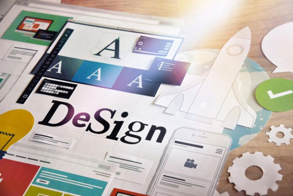

Как быстро создать сайт самому᠌ ᠌
Создать свой личный сайт не представляет сложности, если вы специалист в области сайтостроения.
᠌
Здесь описано как это можно сделатьСоздать свой личный сайт не представляет сложности, если вы специалист в области сайтостроения.
᠌
Здесь описано как это можно сделатьПеред тем, как выбрать конструктор, чтобы создать сайт, следует разобраться, какой из предлагаемых в интернете, лучший.
Нередко при выборе варианта веб ресурса возникает вопрос, какой лучше создать сайт — многостраничный или одностраничник.

᠌
Перед тем, как создать дизайн сайта, важно понимать основные принципы работы с такими проектами. Вначале необходимо определить цель, зачем он нужен.